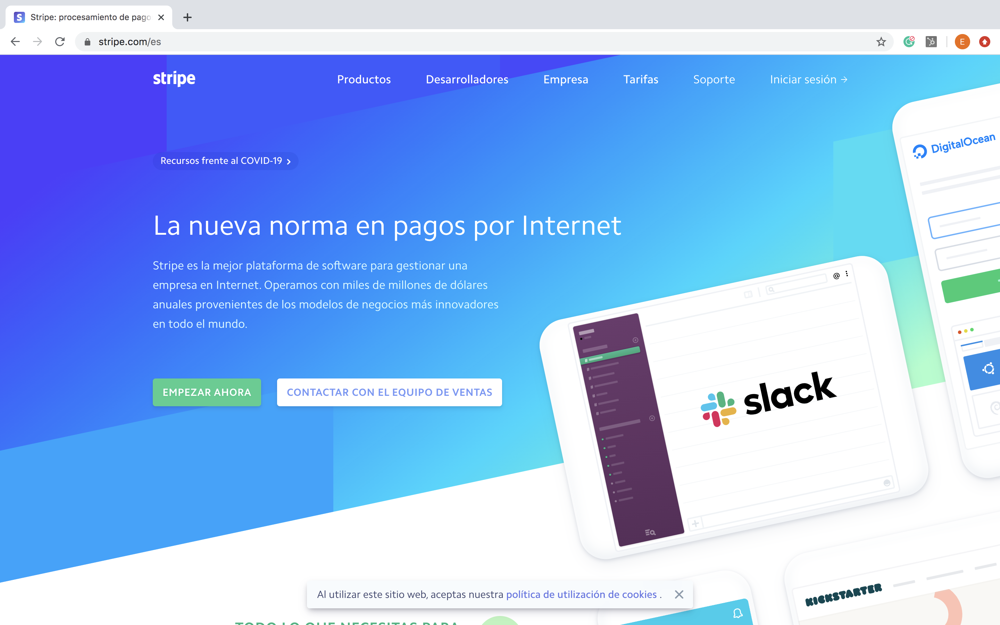

24 MAR 2020
10 herramientas gratuitas
que necesita tu startup
Sabemos que cuando tienes un pequeño negocio, o estás comenzando un nuevo proyecto, buscas todas las formas posibles de lograr los mejores resultados con el mínimo de recursos posible, por eso queremos mostrarte estas 10 plataformas que son totalmente gratis o tienen muy buenas versiones gratuitas y te ayudarán a llevar tu negocio al siguiente nivel.

Trello
Es una de las herramientas favoritas de muchos emprendedores por que permite diseñar
flujos de procesos y organizar tareas de forma visual y sencilla a través de tableros, con esto
puedes tener mejor visibilidad de tus pendientes y los de tu equipo.
Para empezar debes crear un tablero, incluir los diferentes proyectos en curso, agregar tareas y
compartir todo esto con tu equipo, lo que te facilitará hacer seguimiento y permanecer enfocado en
lo más prioritario, manteniendo una perspectiva completa de los diferentes procesos dentro de tu
startup.
Además de todo esto, si quieres ir más allá, Trello permite automatizar procesos enteros a partir de
ciertas reglas que tú mismo estableces, ahorrando tiempo en tareas repetitivas y simplificando la
operación del día a día.
Comienza en Trello
HubSpot
Su versión gratuita es sin duda la herramienta más potente de CRM a la que puedes
acceder sin tener que pagar nada. Básicamente facilita la gestión de tus tareas de Marketing y
ventas, de forma que puedas mantener tus contactos organizados y potenciar tus iniciativas
comerciales.
HubSpot permite, entre otros, la captura de información de tus leads, guardar todo tipo de
información sobre tus contactos, agregar comentarios y tareas a tus clientes, enviar correos masivos
y crear formularios en tu sitio web.
Comienza en HubSpot
Slack
El objetivo de Slack es facilitar la comunicación dentro de un equipo o empresa,
reemplazando el uso del correo electrónico con un servicio de mensajería instantánea.
Esta aplicación ofrece una solución gratuita para empresas pequeñas y entre sus muchas bondades
permite integrar otras plataformas como Trello y HubSpot, separar las conversaciones por canales y
crear hilos de conversación para no perder de vista cadenas de mensajes importantes, de esta forma
se hace más eficiente el flujo de información dentro de un negocio, pasando de la comunicación
centrada en la persona a la comunicación centrada en el equipo.
Comienza en Slack
Hootsuite
Esta es una de las herramientas más utilizadas para monitorear y gestionar las redes
sociales de un negocio. Una de las razones de su popularidad es que tiene un servicio gratuito muy
útil para pequeños negocios, permitiendo fácilmente la gestión de contenidos, publicaciones, cuentas
y temas que son tendencia en el momento.
En su versión gratuita permite acceso a una persona del equipo y el manejo de tres cuentas en redes
sociales, pero si estás dispuesto a pagar por un mejor servicio tienen varios planes diferentes que
seguro se acomodan a las necesidades y presupuesto de tu negocio.
Comienza en Hootsuite

MEGA
Si lo tuyo es guardar y compartir archivos muy grandes, una buena opción es MEGA. Esta plataforma tiene un servicio de almacenamiento en la nube, ofreciendo un plan gratuito de 50GB de espacio para que guardes todo tipo de archivos. También ofrece planes de pago desde 5€ al mes, por 400GB, hasta 30€ al mes por 16 TB. Además de ofrecer esta gran cantidad de espacio en la nube, MEGA te permite transferir archivos con la misma capacidad de almacenamiento que tengas, es decir que todo el contenido que tengas lo puedes compartir con un solo enlace.
Comienza en MEGA
Typeform
Esta herramienta es simple pero bien utilizada puede facilitarte el trabajo y además
hacer ver tu negocio mucho más profesional. Typeform te permite crear formularios de forma gratuita,
que puedes utilizar para cualificar tus leads, hacer encuestas u obtener datos de visitantes a tu
sitio web.
Lo mejor de Typeform es que va más allá de la funcionalidad de crear formularios, ofreciendo un
diseño muy profesional al alcance de cualquier negocio o profesional, además es súper sencillo de
utilizar o compartir y también permite integrarse con otros servicios como Slack para recibir
notificaciones en tu teléfono cuando alguien haya completado un formulario.
Comienza en Typeform
Zoom
En una empresa, grande o pequeña, nunca sobra una herramienta de video-conferencia,
esto lo sabíamos desde antes del COVID-19. Ahora, la pregunta es cuál es la mejor, la respuesta es:
depende.
Dentro de esta lista escogimos a Zoom, que es la plataforma que más se ha valorizado durante el
periodo de cuarentena que vivimos, porque desde antes ya era una herramienta muy popular, utilizada
por varias multinacionales.
Y esto no ha sido fortuito ni gratuito, la versión gratuita de Zoom permite hacer un número de
reuniones ilimitadas de hasta 100 participantes, si quieres más participantes lo que necesitas hacer
es un Instagram Live. La única limitación que tiene esta versión de Zoom es que tiene un límite de
40 minutos por reunión, sin embargo en startups entre menos dure una reunión es mejor.
Una razón adicional para que Zoom ya fuera un éxito antes de la pandemia es que sus versiones de
pago para empresas son muy potentes y existen opciones para todos los presupuestos, así que si no la
has probado te sugerimos hacerlo y tal vez te animes a probar las versiones de pago a medida que
crecen tus necesidades e ingresos.
Comienza en Zoom
Google Tag Manager
Esta herramienta de los servicios de Google te permite hacer seguimiento a las
acciones de los usuarios dentro de tu sitio web. Te va a llevar algo de tiempo diseñar la acción que
quieres rastrear y posicionar los marcadores en las posibles acciones y botones con los que puede
interactuar el usuario dentro de tu plataforma, pero cuando lo consigas tendrás acceso a un canal de
información muy valioso.
Existen tutoriales en Youtube sobre como instalar las etiquetas y sacar provecho a la infinidad de
acciones que puedes rastrear con esta herramienta, o si tienes dudas en Woney también te podemos
asesorar, pues es cierto que esta herramienta de Google tiene una cierta complejidad.
Luego de incorporar esta herramienta dentro de tu plataforma lo importante es hacer un análisis del
comportamiento de tus leads o usuarios para aumentar acciones claves para tu negocio, como la
conversión o la recurrencia.
Comienza en Google Tag Manager

GitHub
Si eres programador o sabes algo sobre desarrollo de software, seguro ya conoces
GitHub y todo lo que puedes hacer con ayuda de esta plataforma. Ahora, si no conoces esta
herramienta y tienes una página web o quieres crearla, te recomendamos comenzar a investigar para
poder sacarle provecho y agilizar tu proyecto.
GitHub es, entre muchas cosas, la plataforma más utilizada por desarrolladores y programadores para
alojar y desplegar sus proyectos en la web. Más allá de lo que esta herramienta representa y sus
funcionalidades, que dan para escribir un blog entero, el punto a destacar aquí es que puede
utilizarse como un servicio de hosting gratuito para sitios web muy básicos (como un MVP), que no
recolectan datos de usuarios.
Si no eres un conocedor del tema, debes tener cuidado si utilizas este servicio, porque su versión
gratuita es totalmente pública y la de pago también si no escoges las funcionalidades correctas, es
decir que los datos que almacenes en tu web serían visibles para cualquier persona si utilizas
GitHub como repositorio de código.
Comienza en GitHub
Stripe
Si estás en Latinoamérica probablemente no te suene mucho Stripe, pues por ahora
solo están en México y tienen una versión beta en Brasil, ya que su foco está en Europa,
Norteamérica y Australia. Aún así, esta herramienta seguro llegará a tu país pronto, pues ha crecido
rápidamente y sus servicios cada día van más allá.
Stripe es una plataforma de pagos online que se integra en tu sitio web para facilitar las
transacciones por la venta de tus productos. El valor agregado de Stripe y la razón de su rápido
crecimiento, es que realmente simplifican la vida al emprendedor con una herramienta fácil de
implementar y también al usuario, facilitando el acceso a una plataforma de pagos sin necesidad de
una cuenta de usuario ni registros de ningún tipo.
Además de plataforma de pagos, Stripe tiene otros servicios, por ejemplo Stripe Atlas se encarga de
constituir tu sociedad a través de un proceso sencillo que toma 20 minutos.
Comienza en Stripe

Si necesitas ayuda o tienes alguna pregunta sobre cualquiera de estas herramientas ve a Woney y te asesoraremos de la mejor forma que podamos.